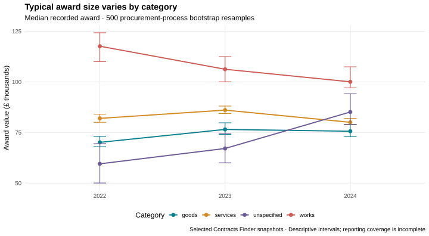

Executed R analysis of active, positive GBP awards dated 2022–2024 in the selected process snapshots.

Capping each award at its category-year 99th percentile is a hypothetical sensitivity calculation. It is not a correction to the source or evidence of savings.
| Category | Year | Median £ | Largest award / total | Value reduction under cap |
|---|---|---|---|---|
| goods | 2022 | 70,105 | 15% | 75.6% |
| goods | 2023 | 76,490 | 56.7% | 86.7% |
| goods | 2024 | 75,585 | 21.8% | 73.5% |
| services | 2022 | 81,948 | 29.2% | 84.9% |
| services | 2023 | 86,030 | 4.9% | 66.9% |
| services | 2024 | 80,000 | 16.2% | 75.6% |
| unspecified | 2022 | 59,500 | 39.9% | 77.4% |
| unspecified | 2023 | 67,081 | 21.1% | 59.9% |
| unspecified | 2024 | 85,100 | 32.7% | 79.1% |
| works | 2022 | 117,576 | 4.4% | 64.1% |
| works | 2023 | 106,200 | 14.5% | 72.4% |
| works | 2024 | 100,000 | 81.1% | 93.3% |
Top 30 supported buyers by attributable value. Removing the largest award or capping awards at the buyer-specific 99th percentile changes the analytical scenario. Registered evidence is the share of attributable value linked to a registration identifier.
| Buyer | HHI | Without largest | Capped HHI | Registered evidence |
|---|---|---|---|---|
| HAMPSHIRE COUNTY COUNCIL | 7454 | 1066 | 852 | 4.9% |
| Home Office | 1113 | 790 | 541 | 0% |
| Leeds City Council | 4069 | 1041 | 276 | 0% |
| Bristol City Council | 8500 | 872 | 795 | 0% |
| MCA - Maritime and Coastguard Agency | 9692 | 806 | 741 | 0% |
| UK Health Security Agency | 4438 | 3367 | 3204 | 0% |
| NHS England | 8369 | 7140 | 8369 | 0% |
| Home Office | 5645 | 4878 | 5645 | 0% |
| Highways England | 425 | 418 | 413 | 0% |
| NHS England | 7836 | 6374 | 7836 | 0% |
| Home Office | 1683 | 631 | 586 | 0% |
| Surrey County Council | 2811 | 1445 | 1853 | 15.1% |
| Health Education England | 441 | 401 | 297 | 0% |
| Leicestershire County Council | 5360 | 485 | 181 | 0% |
| Buckinghamshire Council | 2547 | 1382 | 719 | 0% |
| Jisc | 4012 | 677 | 683 | 0% |
| NATIONAL HIGHWAYS LIMITED | 5398 | 1001 | 583 | 0.1% |
| National Highways | 4122 | 1965 | 2592 | 0% |
| Herefordshire Council | 9129 | 651 | 700 | 0% |
| Partners Procurement Service (PPS) | 7093 | 594 | 520 | 0% |
| DEFRA | 1207 | 978 | 699 | 0% |
| UK Hydrographic Office | 7160 | 704 | 558 | 2% |
| Buckinghamshire Council | 4517 | 1165 | 696 | 0% |
| Defra Network eTendering Portal | 4582 | 960 | 765 | 0.4% |
| NHS England | 8826 | 8054 | 8826 | 0% |
| London Borough of Hackney | 1895 | 1523 | 1143 | 0% |
| Somerset Council | 1977 | 1685 | 1616 | 0% |
| Greater Manchester Combined Authority - Greater Manchester Police | 4957 | 556 | 655 | 0% |
| West Sussex County Council | 9383 | 1379 | 8743 | 0% |
| Cheshire west and Chester Borough Council | 9603 | 852 | 9321 | 0% |
Buyer bootstrap results use 300 resamples and seed 20261113; download the full results for percentile endpoints.
500 resamples of whole awards within each category-year; fixed seed 20261112. Percentile intervals describe median sensitivity under independent resampling. Repeated buyers and related procurement processes may create dependence. These intervals do not account for selection, missing records, inflation or publication changes.
Award values may represent framework ceilings or multi-year commitments. They are not payments, annual spending, or realized supplier revenue. Changes between years are descriptive associations.
Source: UK Contracts Finder, compiled by Open Contracting Partnership. Contains public sector information licensed under the Open Government Licence v3.0.